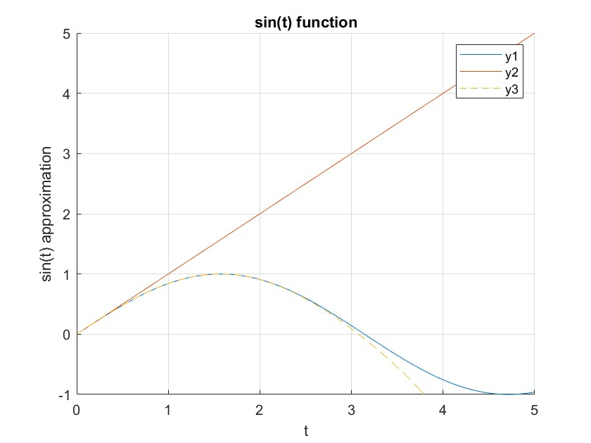
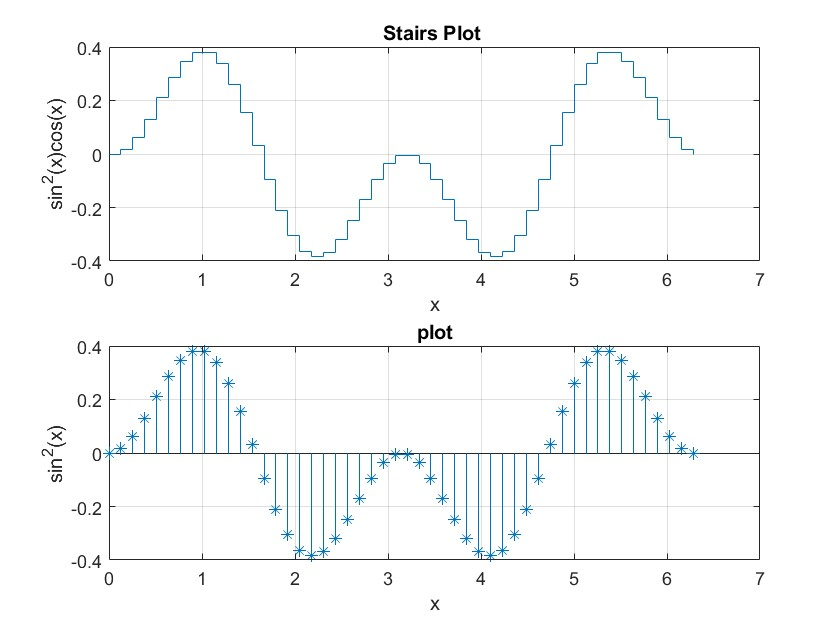
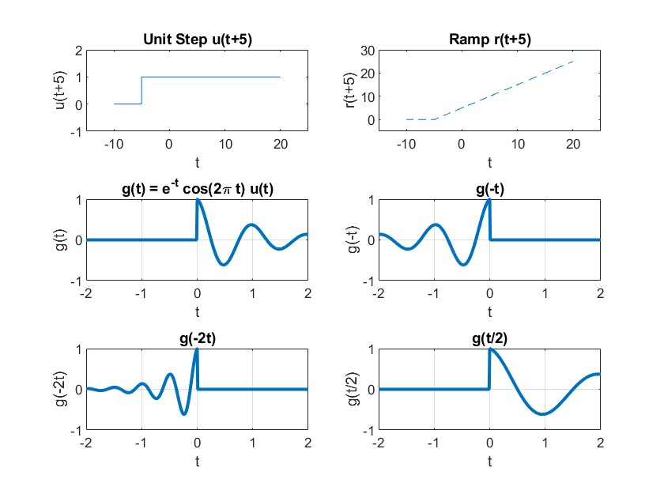

t = linspace(0, 2 * pi, 100);
%(if you have no idea of linspace, search on help)
y1 = sin(t); y2 = t;
y3 = t - (t.^ 3)/6 + (t.^ 5)/120 - (t.^ 7)/5040;
plot(t,y1,t,y2,'-',t,y3,'--') axis([0 5 -1 5])
xlabel('t')
ylabel('sin(t) approximation') title('sin(t) function') text(3.5, 0, 'Point') gtext('Linear Graph separates') gtext('Sin Graph Separates') grid
legend('y1','y2','y3')
Another way to plot multiple graphs on same axis is using hold on and plotting each graph separately, all graph will be plotted on same axis. You can turn off hold using hold off command.
Test Yourself
Plot above three graphs using hold on command:
t = linspace(0, 2 * pi, 100);
y1 = sin(t);
y2 = t;
y3 = t - (t.^3)/6 + (t.^5)/120 - (t.^7)/5040;
hold on;
plot(t, y1);
plot(t, y2, '-');
plot(t, y3, '--');
hold off;
axis([0 5 -1 5]);
xlabel('t');
ylabel('sin(t) approximation');
title('sin(t) function');
legend('y1', 'y2', 'y3');
grid on;

Run following commands and plot the output:
x = -2*pi:pi/10:2*pi;
y = x.^2;
z = sin(x); y1 = cos(x); z1 = exp(x);
subplot(2,2,1),plot(x,y) grid subplot(2,2,2),plot(x,z) grid subplot(2,2,3),plot(x,y1) grid subplot(2,2,4),plot(x,z1) grid
(write instructions for axis label, graph title by yourself)
x = -2*pi:pi/10:2*pi;
y = x.^2;
z = sin(x);
y1 = cos(x);
z1 = exp(x);
subplot(2, 2, 1);
plot(x, y);
title('Quadratic Function');
subplot(2, 2, 2);
plot(x, z);
title('Sine Function');
subplot(2, 2, 3);
plot(x, y1);
title('Cosine Function');
subplot(2, 2, 4);
plot(x, z1);
title('Exponential Function');
grid on;

Test Yourself
Use stairs and stem plots to plot a graph of 𝐬𝐢𝐧 𝟐𝒙 𝐜𝐨𝐬 𝒙 where x is from 0-2π
x = 0:pi/20:2*pi;
y = sin(2*x) .* cos(x);
subplot(2, 1, 1);
stairs(x, y);
title('Stairs Plot of sin(2x)cos(x)');
subplot(2, 1, 2);
stem(x, y);
title('Stem Plot of sin(2x)cos(x)');
Write a M-File program that will ask user for two input digits one by one and then will ask what is sum of those numbers. If the sum is correct, it will print “Correct” and otherwise it will print “Wrong”.
(If you wish you can also extend it so that program should keep on asking the sum till it gets the correct sum)
A sample output is : What number is a: 15 What number is b: 20
What is the sum of a + b: 35 answer = Correct!
a = input('What number is a: ');
b = input('What number is b: ');
correctSum = a + b;
while true
userSum = input('What is the sum of a + b: ');
if userSum == correctSum
fprintf('Answer = Correct!\n');
break;
else
fprintf('Answer = Wrong! Try again.\n');
end
end
While Loop:
Syntax of while loop is similar to for loop:
while expression statements
end
In for loop number of repetitions are known, but if you are facing condition that number of repetitions are not known, then while loop is used.
Here is an almost trivial problem that requires a use of this loop. Suppose that the number π is divided by 2. The resulting quotient is divided by 2 again. This process is continued till the current quotient is less than or equal to 0.01. What is the largest quotient that is greater than 0.01?
To answer this question code will be:
q = pi;
while q > 0.01 q = q/2;
end q
And the output is:
q =
0.0061
Switch-case constructions
Syntax of the switch-case construction is
switch expression (scalar or string)
case value1 (executes if expression evaluates to value1) commands
case value2 (executes if expression evaluates to value2) commands
.
.
.
otherwise
statements
end
Switch compares the input expression to each case value. Once the match is found it executes the associated commands.
For example a random integer number x from the set {1, 2, … , 10} is generated. If x = 1 or x = 2,
then the output is 20. If x = 3 or 4 or 5, then the output is 30, otherwise the output is 50.
x = ceil(10*rand % rand generates random from 0 to 1 so x is from 1 to 10 (Got it??)
switch x
case {1,2} a=20;
case {3,4,5} a=30;
otherwise
a=50;
end x a
Let’s define general unit step function as:
function y=u(t)
y = (t>=0);
end
and the ramp function as
function y=r(t)
y=t.*(t>0);
end
Now the above function can be used to plot the function for any range both in discrete and continuous domain. For example, if you want to plot unit step function from t=-10 to 20 in continuous time, you can write:
>>t=[-10:0.01:20];
>> x=u(t);
>> plot(t,x)
For discrete time plot, you should set the step size to one and use stem instead of plot.
Visualizing operations on the independent variable of signals
Two operations on a signal’s independent variables are commonly encountered i.e., shifting and scaling. We have already talked about both operations in lecture # 2.
Task 1:
Use above function to plot following graphs:
i. u(t+5)
ii. r(t-3)
There must be grid, labels and titles on the graph.
function y = u(t)
y = (t >= 0);
end
function y = r(t)
y = t .* (t > 0);
end
% Plotting u(t+5)
t = -10:0.01:20;
x = u(t + 5);
plot(t, x);
title('Unit Step Function: u(t+5)');
% Plotting r(t-3)
t = -10:0.01:20;
x = r(t - 3);
plot(t, x);
title('Ramp Function: r(t-3)');
Inline objects can be one easy way to investigate both operations.
Hint: The unit step function u(t) arises naturally in many practical situations. With the help of relational operators, inline objects can represent the unit step function. The unit step function is readily defined using the >= relational operators, like
% Define the inline function for g(t)
g = @(t) exp(-t) .* cos(2 * pi * t) .* u(t);
% Plot g(t) over -2 ≤ t ≤ 2
t = -2:0.01:2;
figure;
plot(t, g(t), 'LineWidth', 2);
grid on;
xlabel('t');
ylabel('g(t)');
title('g(t) = e^{-t} cos(2\pi t) u(t)');
% Plot g(-t)
figure;
plot(t, g(-t), 'LineWidth', 2);
grid on;
xlabel('t');
ylabel('g(-t)');
title('g(-t)');
% Plot g(-2t)
figure;
plot(t, g(-2 * t), 'LineWidth', 2);
grid on;
xlabel('t');
ylabel('g(-2t)');
title('g(-2t)');
% Plot g(t/2)
figure;
plot(t, g(t / 2), 'LineWidth', 2);
grid on;
xlabel('t');
ylabel('g(t/2)');
title('g(t/2)');
% Plot g(2t - 1)
figure;
plot(t, g(2 * t - 1), 'LineWidth', 2);
grid on;
xlabel('t');
ylabel('g(2t-1)');
title('g(2t-1)');
